IMPLEMENTATION REVIEW · 21 SEPTEMBER 2026More room to play.
Fighters stay recognizable.
Shorter screen heroes, private approved avatars in player lists, and six environments with separate banner and background compositions.
1,379 Jest tests passed26 Deno tests passed12 images · 2.15 MBImplementation is reviewable. Native acceptance is partial: standard-phone live routes and share export are captured; small-phone images below are component fixtures. Human avatar verification requires the intentionally undeployed endpoint. Android remains blocked.
Validation report and remaining checks · Asset manifest and prompts
Arena & Profile · actual routes
Standard iPhone, 402×874 points, default text size, generated fighter and equipped frame. Both action rows fit above the tab bar. Full-body artwork remains contained.
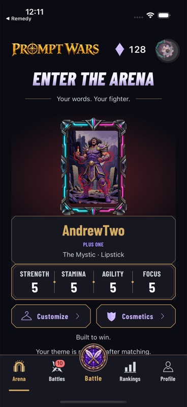
Arena. Raised Battle action and divided four-stat tray retained.
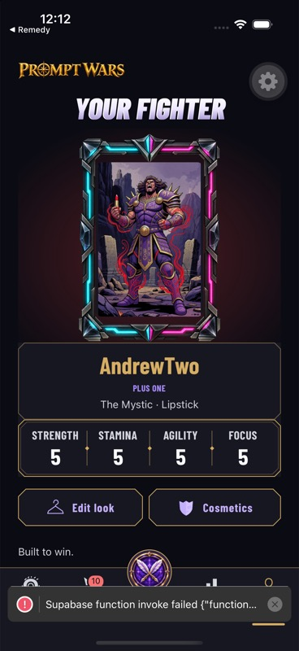
Profile. Edit look and Cosmetics precede battle cry and account metadata. Debug toast records the missing avatar endpoint.
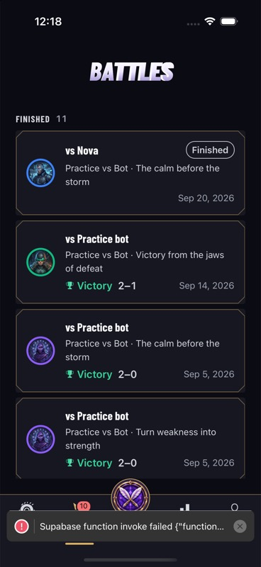
Actual battle history remains browseable. Endpoint deployment is required to validate generated human avatars here.
Full-size share export
The screen hero’s height cap does not affect the exported composition. Actual captured PNG: 1152×2235 pixels. Nothing was sent to another person or app.
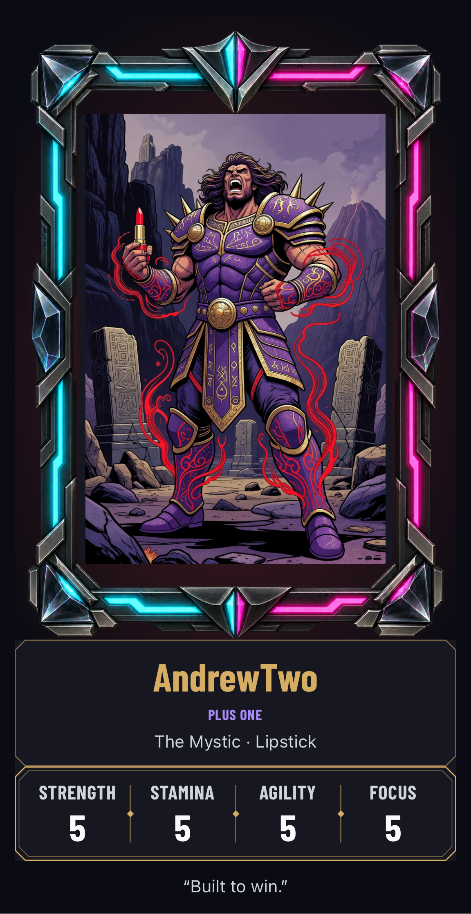
Full PNG from the native share capture. Click to inspect original.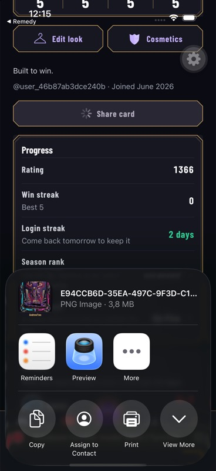
Native iOS sharing opened successfully after image, frame and font readiness.Battle banner · small-phone component evidence
375×812 points. These use the real shared battle components with synthetic fixture data, not a live battle. The new banner fills the plaque while text stays native.
 Earlier fixture — different viewport/content state; use for artwork comparison only.
Earlier fixture — different viewport/content state; use for artwork comparison only.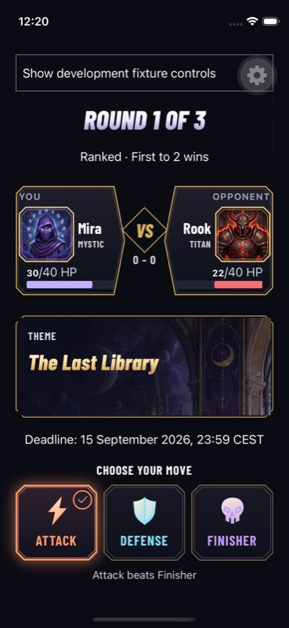
Current small-phone fixture, default text.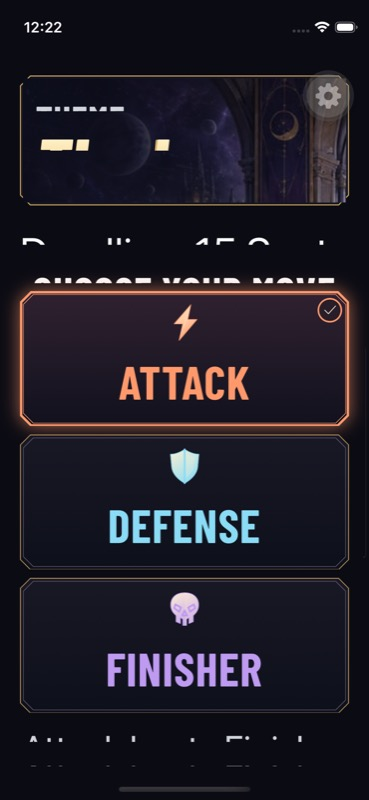
Diagnostic: in-place OS text-size change in the existing Debug binary clipped text. Fixed by refreshing only native text nodes on font-scale change. Compare the retest below.Dynamic Type · retested without restart
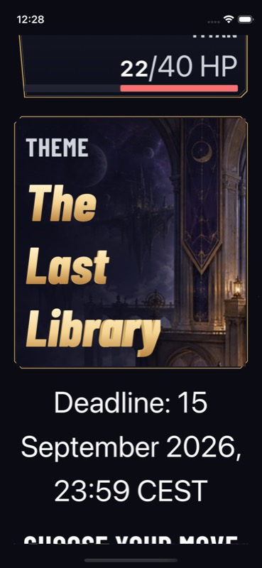
Same 375×812 simulator; live accessibility-extra-large transition after the fix. Theme height grows naturally, and editor state remains mounted.Six environments · twelve compositions
Painted scenery with architecture and depth. Banners place their landmark on the right and quieter space behind text. Portraits preserve a clear foreground for fighter presentations.
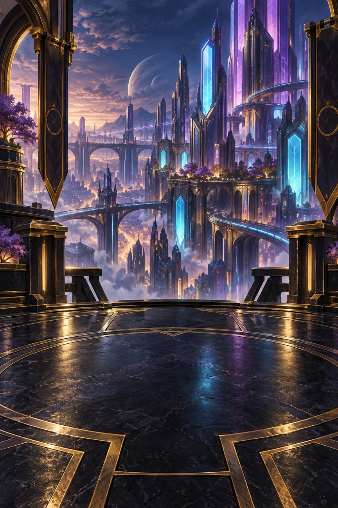
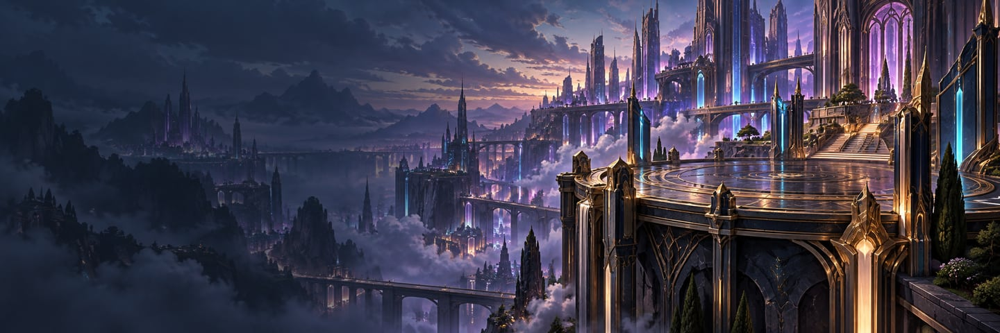
Neon Nexus · independent portrait and banner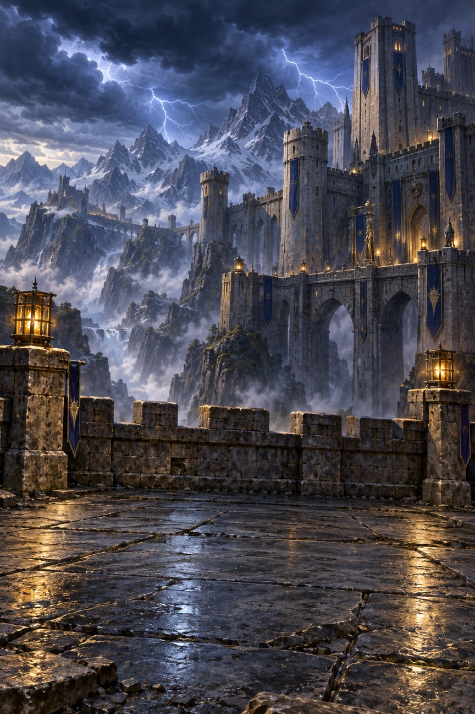
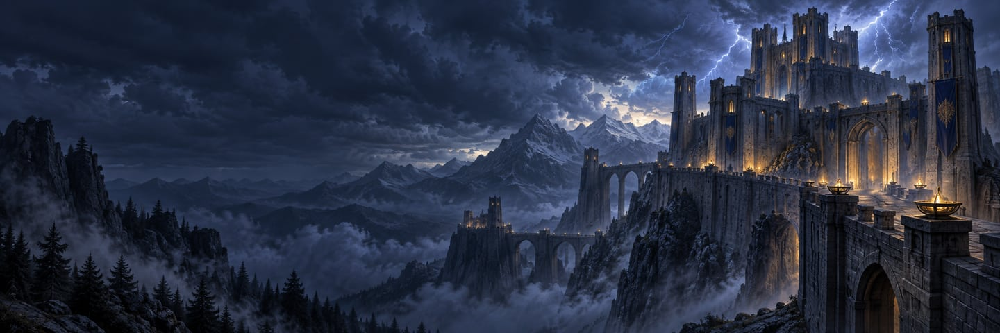
Storm Citadel · independent portrait and banner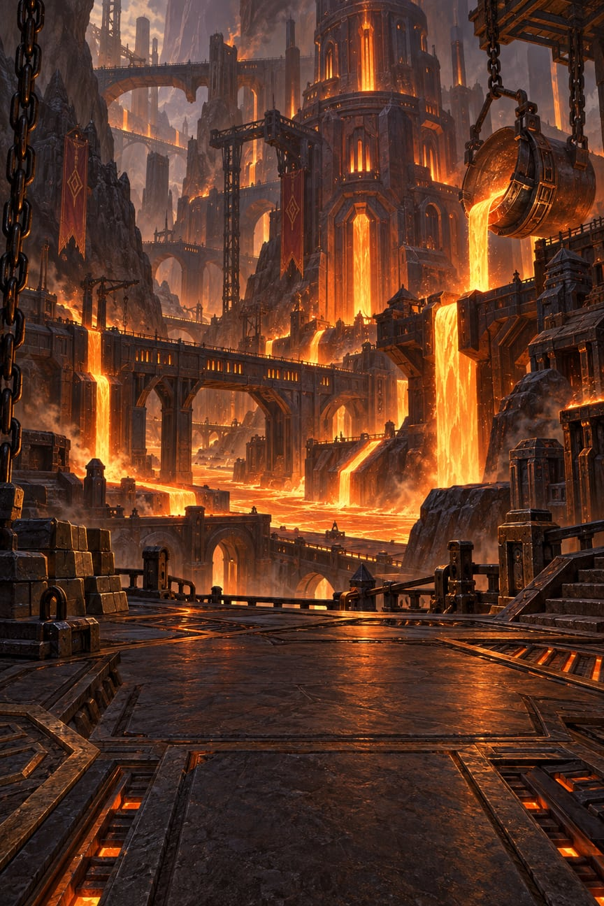
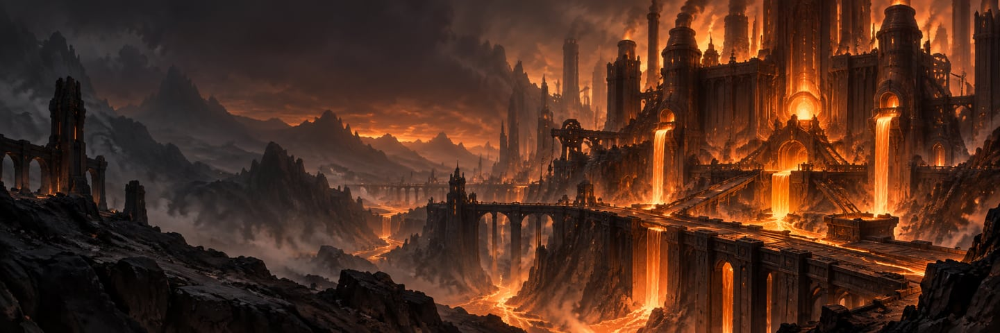
Ember Forge · independent portrait and banner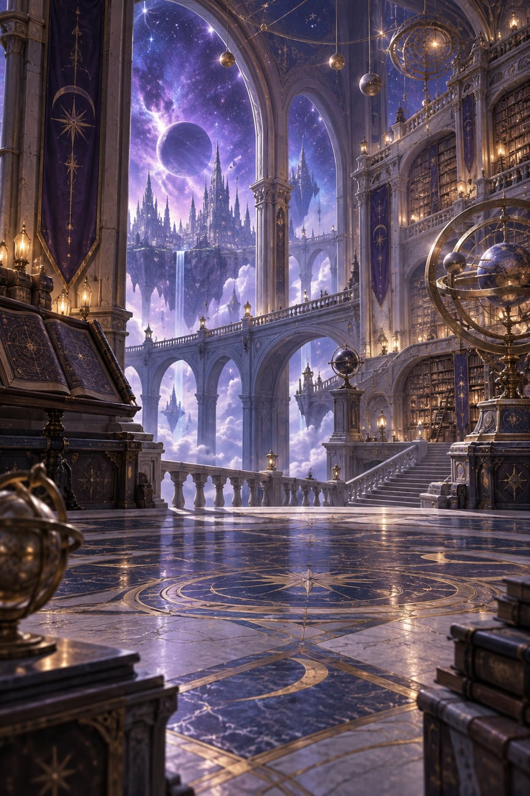
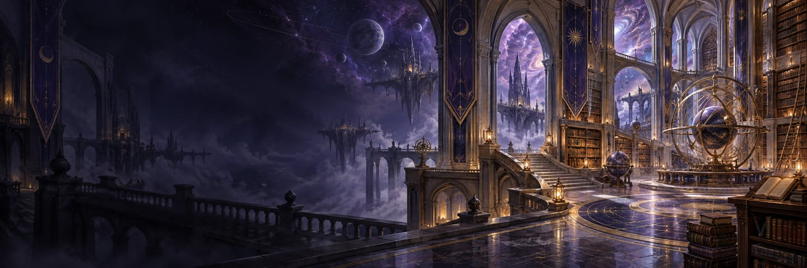
Astral Temple · independent portrait and banner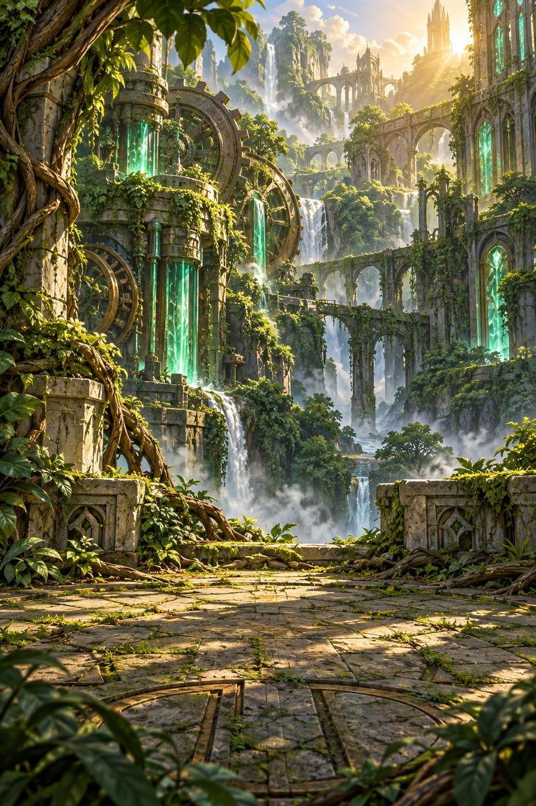
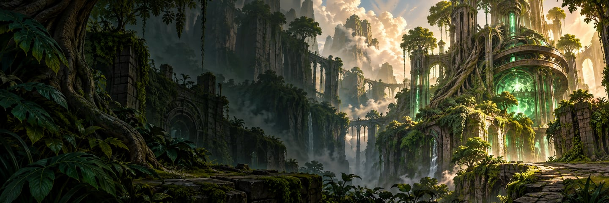
Verdant Reactor · independent portrait and banner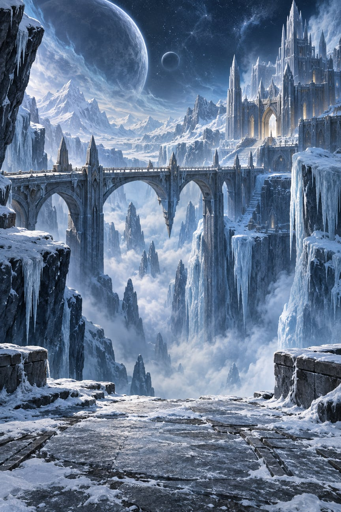
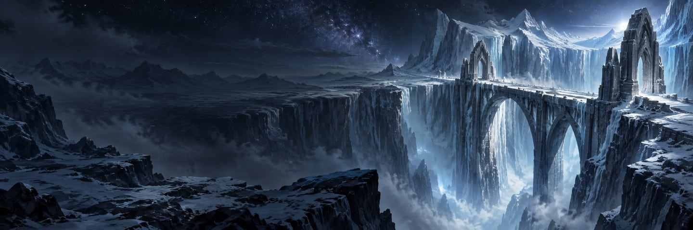
Frozen Void · independent portrait and bannerRelease checks still open
Actual small-phone Arena/Profile require sign-in. Deploy the new avatar endpoint before client distribution, then verify real human avatar/current-vs-frozen identity, blocked/removed art and offline recovery. Finish actual workspace/waiting, keyboard, VoiceOver, Reduced Motion and device-matrix checks. Android remains blocked. No release build, submission, migration or deployment was performed.